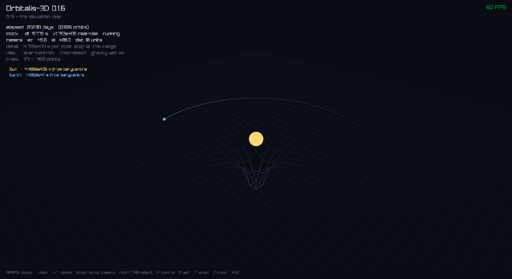

the result, first

elapsed 202.90 days (0.555 orbits)
clock dt 15779 s x1.753e+06 real-time running
camera az 45.0 el +28.0 dist 18 units
detail 4.756e+04 m per float step at this range
view star-centred compressed gravity well on
trails 371 / 900 points
drag to rotate, scroll to zoom, click or TAB to select a body, SPACE
to pause, . to single-step, +/- for speed. the Earth
orbits, leaves a fading trail, and the ground is a plot of the gravitational potential
funnelling down under the Sun.
and the number that matters most is one you cannot see: a run at 30 fps and the same run at 300 fps end in bit-identical positions. not close. equal.
the problem this milestone exists to solve
I moved the viewer ahead of the serious numerical-methods work on purpose. the original spec had it as an afterthought: dump binary files, look at them later in ParaView. staring at printed floats for three more milestones sounded miserable, and I would never have caught a bug that way.
then I measured what an honest picture of the solar system actually looks like:
| body | radius | pixels on screen |
|---|---|---|
| Sun | 6.957e8 m | 1.67 |
| Jupiter | 6.991e7 m | 0.168 |
| Earth | 6.371e6 m | 0.0153 |
| Ceres | 4.730e5 m | 0.0011 |
Earth is one sixty-fifth of a pixel. Ceres is one nine-hundredth. even the Sun, which holds 99.86% of the system's mass, is under two pixels across.
that is not a rendering problem to fix. it is what the solar system is. if you drew Earth's orbit as a circle one metre across, Earth would be 42.6 micrometres, about half the width of a human hair, and the Sun would be a 4.65 mm grain of rice at the centre. an accurate picture is a black screen.
so the viewer has to lie. the engineering is in deciding which lies, keeping them consistent, and admitting to them on screen.
it is also in knowing which things must not be lies at all, and that turns out to be the harder half.
part one: the things that must be exact
coordinates, and a floor you cannot zoom past
the simulation stores positions in metres as doubles, around $1.5 \times 10^{11}$. OpenGL is a 32-bit float pipeline the whole way down: vertex positions, the model-view matrix, the depth buffer. so a double has to become a float somewhere, and where decides whether the picture survives being zoomed into.
a float has a 24-bit significand. at 1 AU, which sits between $2^{37}$ and $2^{38}$, the gap between consecutive representable floats is
$$2^{37-23} = 2^{14} = 16{,}384 \text{ m} \approx 16 \text{ km}$$the obvious conversion scales first and subtracts later, which in practice means the subtraction happens in float:
render = float(position / scale) - float(focus / scale)put the camera on the Earth at one AU per render unit. both operands are then within $7 \times 10^{-9}$ of 1.0, and float spacing near 1.0 is $1.2 \times 10^{-7}$. both values round to the same float. the subtraction gives exactly zero, and a spacecraft a kilometre away renders inside the planet.
the fix is to subtract first, in double, and narrow last:
render = float((position - focus) / scale)the quantity being narrowed is no longer $1.5 \times 10^{11}$, it is the offset from the camera, which for anything visible is small. that offset then gets the full relative precision of a float: seven significant digits of whatever it happens to be, rather than seven significant digits of an astronomical unit.
the part I did not expect was what happens when you zoom. I assumed the naive version would at least improve. it does not. sweeping the scale across eight orders of magnitude, camera parked on the Earth, the smallest offset the naive transform can represent:
1 AU/unit → 9069 m
1e9 m/unit → 6873 m
1e6 m/unit → 12205 m
1e3 m/unit → 9435 ma hard floor around 9 km, regardless of zoom. both operands scale together, so shrinking the scale grows the quantities being subtracted, the float ULP grows with them, and the metric error stays put at roughly $\text{AU} \times 2^{-24}$. Earth is 12,742 km across, so under the naive scheme every close-up view is a lie you cannot escape by zooming.
camera-relative has no floor. resolution is proportional to distance from the camera, so zooming genuinely recovers detail. the HUD reports it live: 23,780 m per float step at 14 units out, 1,486 m at 0.57.
this is the same principle that has now decided four separate designs in this project:
| where | the wrong way | the right way |
|---|---|---|
| Vec3 division | v * (1/s) |
v / s, one rounding not two |
| gravity kernel | normalized() then scale |
d2 * sqrt(d2), no cancellation lost |
| coordinates | narrow then subtract | subtract then narrow |
| trails | store render coords | store metres, convert late |
do the cancellation in the wide type, and narrow as late as possible. I should probably write it on something.
the timestep, and why frame time must never reach the integrator
the obvious simulation loop is integrator.step(system, frame_delta * speed). it
is wrong in two ways, and only one is obvious.
it destroys reproducibility. the timestep becomes whatever the frame happened to take, so the same scenario gives different answers on a 60 Hz machine, a 144 Hz one, and the same machine when something else grabs the CPU. there is no run to compare against because there is no run twice.
it also destroys the reason I chose the integrator. back at 0.0.5 I
measured that semi-implicit Euler keeps a circular orbit closed to within four parts in a
hundred thousand while forward Euler spirals out 20% per orbit, and that its energy error
stays bounded at 0.0296% forever instead of growing. all of that assumed a constant
dt. semi-implicit Euler is symplectic only for a fixed step. vary it
and the bounded, oscillating error becomes a drifting one, and the method loses the exact
property it was picked for.
so real time goes into an accumulator and whole fixed steps come out:
accumulator += real_delta * time_scale;
steps = floor(accumulator / timestep);
accumulator -= steps * timestep;the integrator only ever sees timestep(). the number of steps absorbs all the
variation.
there is one more thing it needs. if a frame runs long enough to owe more steps than can be computed in time, running them all makes the next frame later still, which owes even more, and the application locks solid. so steps per frame are capped and the backlog beyond the cap is dropped rather than carried. carrying it is precisely what turns one slow frame into a permanent one. simulated time falls behind real time under load, which is the right trade: a simulation that runs slow is usable and one that hangs is not.
the orientation, and a negation that carries the whole thing
the orbit was drawn vertically, standing on its edge. the cause is a convention clash I had walked straight past for five steps.
the simulation uses the astronomical convention: the orbital plane is XY and Z is the orbit normal, the same way ephemerides define the ecliptic. renderers are Y-up. handing simulation coordinates straight to the GPU therefore tips the entire solar system onto its side.
the fix is a rotation, and it lives in the renderer because the physics has no preferred plane and no business knowing which way a graphics API points its Y axis:
render.x = sim.x
render.y = sim.z (orbit normal becomes "up")
render.z = -sim.ythat negation is load-bearing and I nearly left it out. swapping two axes without it mirrors the space. a mirrored space silently reverses the apparent direction of every orbit: prograde motion drawn retrograde, with nothing on screen to hint that anything is wrong. with the negation it is a −90° rotation about X and handedness survives. there is a test checking the render basis still satisfies $\vec x \times \vec y = \vec z$, which is the kind of test that looks pedantic right up until it isn't.
part two: the things that must be distorted
body sizes, and being loud about it
a constant multiplier does not work, because the proportions are the problem:
Sun : Earth = 109 : 1
Sun : Ceres = 1471 : 1any factor that makes Ceres visible at three pixels makes the Sun 4,400 pixels across.
so radii go through a power law instead:
$$R_{render} = R_{ref} \left( \frac{r}{r_{ref}} \right)^{n}$$what different exponents do to that 1471:1 range:
| exponent | Sun:Earth | Sun:Ceres |
|---|---|---|
| 1 (honest) | 109 : 1 | 1471 : 1 |
| 1/2 | 10.5 : 1 | 38.4 : 1 |
| 1/3 | 4.8 : 1 | 11.4 : 1 |
| 1/4 | 3.2 : 1 | 6.2 : 1 |
the cube root. 11:1 across the whole range from a star to a dwarf planet still reads clearly as "the Sun is much bigger", while keeping everything on screen at once.
the property I actually care about is not the exponent. it is that the mapping stays strictly monotonic: the picture is allowed to lie about ratios and is never allowed to lie about ordering. a bigger body must never be drawn smaller than a smaller one, and there is a test pinning Sun > Jupiter > Earth > Ceres.
compression alone is not enough, because "visible" is a screen-space idea and a radius is a world-space number. so the drawn radius is floored at three pixels, computed per body per frame, because it depends on how far that particular body is from the camera:
$$p = \frac{R \cdot H}{2 \, d \, \tan(\theta_{fov}/2)}$$inverted for $R$. a body twice as far away needs twice the world radius to hold the same three pixels.
and the HUD says how big the lie is:
Sun radius 6.9570e+08 m drawn 14x too big
Earth radius 6.3710e+06 m drawn 313x too bigI think this matters more than it looks. most space visualisations exaggerate silently, and a viewer that quietly draws the Earth 313 times too big is teaching someone something false. it costs one line of HUD text to be honest instead. it also makes the compression legible: Earth needs 313× of help and the Sun only 14×, and that gap is the power law working, because small things need more assistance than large ones.
pressing T switches to true scale, and the result is a better demonstration than anything I designed. at true scale the Sun is 1.67 px and Earth is 0.0153 px, so both fall below the three-pixel floor and clamp to the same dot. a star that could swallow a million Earths, drawn identically to a planet, because at any zoom where you can see the orbit both are specks. that fell out of the floor with no special case, which I like considerably more than if I had written one.
trails, and what uniform spacing throws away
trails store simulation coordinates, not render ones, and converting at draw time is the whole design.
render coordinates are relative to the camera focus. change what you are following and the focus jumps by an astronomical unit, so every historical point is suddenly expressed against a different origin than the one it was recorded in. the trail stops travelling with the body and smears across the screen. storing metres makes a trail mean the same thing in every reference frame, at the cost of one conversion per point per frame.
points are sampled by distance travelled, not once per frame. a body near perihelion moves several times faster than at aphelion, so time-based sampling bunches points where the body is slow and stretches them where it is fast, which is exactly backwards: the fast part is where the curve bends hardest and needs the most points.
but that choice is itself a lie, and a specific one. Kepler's second law says a body sweeps equal areas in equal times, which means it moves fastest at perihelion. a uniform-spacing trail deliberately erases exactly that. so the picture that best shows the shape of an orbit is the one that shows least about its dynamics. a time-sampled trail would make the second law visible immediately, as points bunching at aphelion and spreading at perihelion. that is a genuinely useful alternate view and it is on the list for later.
and then there is the Sun's trail, which has one point.
Sun 1 trail points
Earth 366 trail pointsnot a bug. both bodies orbit their common barycentre, and their orbital radii are in inverse proportion to their masses. Earth's is $1.496 \times 10^{11}$ m and the Sun's is $4.49 \times 10^5$ m: a ratio of 333,000 to one, which is exactly the mass ratio, because that is what the barycentre condition requires. the Sun's whole orbit is therefore 898 km across, while one trail sampling step at this scale is 1.12 million km: the entire orbit is about 1,250 times smaller than a single step.
distance-based sampling gave the honest answer without being asked: at any zoom where you can see Earth's orbit, the Sun's orbit is one point. the Sun's motion is real, and it is how the first exoplanets were found, but it is not visible on the same picture as the planet causing it.
the gravity well, and what it does and does not say
the ground plane is a grid of the gravitational potential, displaced downward into a well. the picture everyone recognises, done as an actual plot rather than an illustration.
$$\Phi(\vec r) = -\sum_i \frac{G \, m_i}{\sqrt{|\vec r - \vec r_i|^2 + \varepsilon^2}}$$the height is a real quantity. $\Phi$ is the energy per kilogram needed to haul a test mass from that point out to infinity. it is negative everywhere and rises toward zero as you leave, which is why it is a well rather than a hill, and it has units of J/kg. there is a test checking that $\sqrt{2|\Phi|}$ at one AU gives Earth's escape velocity of 42.1 km/s, which is also $\sqrt2$ times the circular speed, as it should be.
and the shape explains the orbit because the slope is the acceleration:
$$\vec a = -\nabla \Phi$$there is a test for that too, comparing a numerical gradient of the potential against what the force solver produces at the same point. they agree to a part in $10^6$. so the steepness you can see is the pull. a planet stays in orbit because it is moving sideways fast enough to keep climbing the wall as fast as it falls inward; something without that sideways speed goes down the funnel. that is the thing this picture is genuinely good at showing.
what it is not is curved spacetime. the usual criticism of the rubber-sheet analogy is that it explains gravity using gravity, since it relies on your intuition that balls roll downhill. that criticism is completely fair when the picture is presented as general relativity. as a plot of $\Phi$ it is simply correct, and it is honest about being a plot: the vertical axis is not a spatial dimension any more than height on a contour map is. nothing physically moves up or down.
one detail worth knowing: $\Phi$ falls off as $1/r$ while the force falls off as $1/r^2$. so the well is much wider than it looks steep. the potential at 10 AU is a tenth of what it is at 1 AU, not a hundredth. the funnel looks narrow only because the depth normalisation is dominated by the softened floor right next to the Sun.
Earth has a well too. it is 333,000 times shallower and invisible at this scale, which is the same ratio that gives the Sun one trail point and Earth 313× exaggeration. in a two-body system the mass ratio is the only number that matters, and it keeps turning up wearing different hats.
part three: the architecture that made any of this testable
a viewer is nearly untestable. there is no display on a build agent, so anything that opens a window is either skipped or flaky.
but almost nothing the viewer does is actually a draw call. converting coordinates, sizing bodies, orbiting a camera, intersecting a ray with a sphere, maintaining a ring buffer, accumulating a timestep: all of it is arithmetic with real edge cases, and none of it needs raylib.
so the view layer splits in two:
orbitalis-core physics, no dependencies
^
|
orbitalis-render view logic, links core, NO graphics API
^ ^
| |
orbitalis-viewer orbitalis-tests
(thin raylib shell)
orbitalis-render holds RenderFrame, BodyScale,
OrbitCamera, Picking, Trail,
PotentialSurface and SimClock. the test suite links it happily and
never opens a window. the viewer became a thin shell over the top, and it is the only target
that needs a GPU.
that rule is enforced by the build rather than by good intentions. a comment does not stop anyone, including me in eight months, from adding a graphics dependency to solve some small problem:
foreach(_guarded IN ITEMS orbitalis-core orbitalis-render)
get_target_property(_links ${_guarded} LINK_LIBRARIES)
if(_links MATCHES "raylib|glfw|opengl|OpenGL|SDL")
message(FATAL_ERROR "${_guarded} links a graphics library ...")
endif()
endforeach()I tested it the only way worth testing such a thing: by breaking the rule and confirming the configure fails.
the payoff is 177 test cases and 732 assertions covering a graphical application, of which
exactly one needs the binary to run at all, and that one just checks --version
returns before InitWindow.
seven things I got wrong
the maths above was the part that was supposed to be hard. these are the parts that actually cost me time, and five of the seven share a shape.
1. a test that did not exist, while ctest reported success
I added a smoke test for the viewer, rebuilt, ran ctest:
100% tests passed, 0 tests failed out of 7878. it had been 78 before. adding a test had changed nothing, and the test runner reported complete success while doing so.
add_test() in a subdirectory is silently ignored unless
enable_testing() has already been called in an enclosing scope. my root
CMakeLists called it after descending into the viewer. no warning, no error, no
diagnostic of any kind.
I only caught it because I happened to remember the number from a minute earlier. a green run with a missing test looks exactly like a green run.
2. an edit script that discarded half its work
I patch files with a helper that reports when a pattern does not match. it reported one miss, correctly. what it did not say is that the other change to that file, which had matched fine, was thrown away too: the helper returned early before writing.
so a two-change batch with one bad pattern applied neither, while printing a message that looked like it affected only one of them. the build failed on the missing link, which is the only reason I noticed.
3. a loose assertion sheltering a wrong belief
I wrote a comment claiming the Sun was drawn "~2.9x too big". it is 14×. I had divided something backwards while estimating and never checked.
nothing failed, because the assertion next to it said only sun > 1.0.
a loose assertion is not merely weak, it is shelter for a wrong belief. it
passed happily for as long as I believed something false, and would have kept passing
forever. where the real number is known, assert the real number.
4. testing a state machine through a GPU window
I added TAB to cycle through bodies, then tried to verify it by posting synthetic key events at the window. only the first of three ever arrived. I still do not know why.
I could have gone hunting. instead I noticed I was trying to test a pure state transition
through a graphics window, which is a silly place to test one from. the cycling logic moved
into orbitalis-render as a four-line function, and the full loop became four
assertions.
when something is hard to test, that is usually information about where it lives, not a reason to test it less.
5. two rates beating against each other
the trail looked fine but held 625 points after 1.25 orbits when the geometry said 1,177.
sampling ran once per frame with a 0.04-unit threshold, and Earth was moving 0.037 units per frame. so roughly every other frame failed the test and the spacing alternated instead of being uniform. visually invisible at 2 to 4 pixels, but it meant the trail's length in orbits depended on the framerate, which is the exact coupling the next step existed to remove, showing up somewhere I was not looking for it.
6. asserting the wrong guarantee entirely
the headline test for the simulation loop: ten seconds of real time should produce ten steps at 30, 60, 144 and 300 fps. three of the four failed.
not a bug. summing $1/30$ three hundred times gives 9.9999999999999751,
while $1/60$ six hundred times gives 10.000000000000076. ten seconds is
exactly a multiple of the timestep, so it sits precisely on a floor() boundary,
and a shortfall of 1e-14 costs a whole step. no accumulator built on doubles avoids this.
I had asserted the wrong property. the guarantee is not the step count, it is that every step is the same length, so the physics is identical and at most one step separates two framerates. the test that actually mattered was the end-to-end one:
const Vec3 slow = run_at(1.0 / 30.0);
const Vec3 fast = run_at(1.0 / 300.0);
CHECK(slow == fast); // exact equalityten times the frames, bit-identical trajectory. that one passed first time, which is how I knew the clock was fine and the test was not.
7. misreading my own HUD
with the camera at a star's surface the whole viewport is bright yellow, and pale grey text on it is illegible. I know it is illegible because I misread my own camera distance off a screenshot: I read 0.5706 and spent a while working out why the clamp was 0.5% off, before realising the clamp was exactly right at 0.5736 and I had misread a 3 as a 0.
two lines of semi-transparent backing panel fixed it. a readout that only works against a dark background is not a readout.
the shape they share
five of those seven are the same failure: a tool or a test reporting success while
doing less than I thought. vcpkg linking a scripting language into my binaries at
exit code 0 back in the first milestone. an edit helper printing one miss while discarding
two changes. add_test ignored while ctest said 100%. an assertion passing while
I believed a wrong number. a test passing while measuring something other than the thing it
claimed.
I keep writing "the dangerous failures are the silent ones" in my notes and then getting caught by another one. the actual conclusion is not to be more vigilant, because vigilance does not scale. it is to prefer tools that fail loudly, and to check that a change actually changed something: after adding a test, look at whether the count went up.
the other recurring lesson, from numbers 5 and 6, is subtler and I think more useful: write tests from what you can guarantee, not from what you expect. three failing tests in this project turned out to be measuring the wrong thing, and in every case the code was fine. the tempting response is to loosen the tolerance until it goes green, which leaves you with a test that still passes and no longer means anything.
where 0.2.0 landed
the promise was: I can watch Sun-Earth, spin the camera and speed it up, and the sim gives identical results at 30 fps and at 300 fps.
- bit-identical final positions at 30 and 300 fps, checked by exact equality, not by eye
- an interactive camera: drag, scroll, click or TAB to select, pause, single-step, speed
- bodies drawn at readable sizes with the exaggeration factor stated on screen
- trails that reproject correctly in any reference frame
- a gravitational potential surface whose slope is the actual acceleration
- 177 test cases and 732 assertions, in a library that links no graphics symbols at all
six steps: a window, a coordinate system, spheres, a camera, trails, a clock.
what is next
milestone 0.3.0: integrators, properly. velocity Verlet, classic RK4, and RKF45 with adaptive stepping, plus the energy diagnostics that prove which of them is actually conserving anything.
gravitational_potential() is already sitting in the core library, written for
the gravity well, and the potential-energy term of the total energy is built from exactly
that function. so the thing that draws the picture will also be the thing that measures
whether the integrator is lying. which feels like the right way round for a project whose
whole theme this milestone turned out to be honesty about what you are looking at.